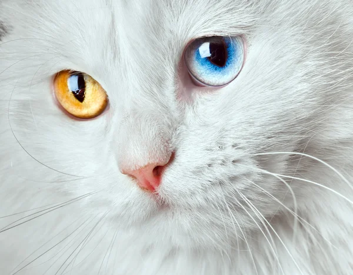

Você sabia que gatos brancos são surdos?
❶ min de leitura.
Gatos de pelagem branca tem uma forte propensão a serem surdos. especialistas afirmam em estudos que 72% dos gatos brancos de olhos azuis são totalmente surdos. Isso acontece devido à interrupção genética no desenvolvimento das células. Por esse motivo, a falta de pigmentação na pelagem e nos olhos. Isso não se aplica a todos os gatos brancos de olhos azuis, mas sim a sua grande maioria.
Postado em, 16 de Novembro de 2022